library(BiocFileCache)
bfc <- BiocFileCache(ask = FALSE)
umi_url <- "https://ftp.ncbi.nlm.nih.gov/geo/series/GSE112nnn/GSE112013/suppl/GSE112013_Combined_UMI_table.txt.gz"
umi_path <- bfcrpath(bfc, umi_url)
umi_path
## BFC1
## "/opt/R-cache/R/BiocFileCache/fb663f9dea_GSE112013_Combined_UMI_table.txt.gz"2 Hands-on: from a count matrix to cell types
In 2h30, we go from the count matrix described in Chapter 1 to a map of the adult human testis with a name on every population, and to a first differential expression analysis. Every step adds something to one object, a SingleCellExperiment, which grows as we go (Figure 2.1).
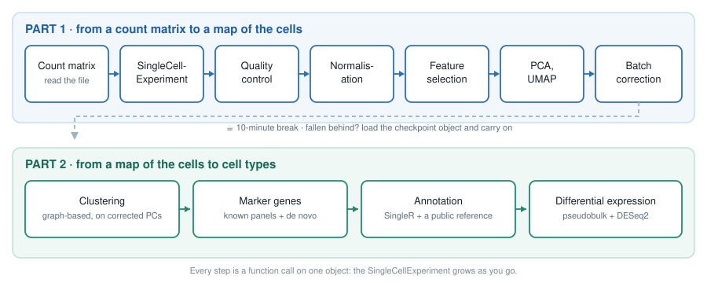
| Time | Section | Duration |
|---|---|---|
| 0:00 | Setup | 5 min |
| 0:05 | Reading the count matrix | 10 min |
| 0:15 | The SingleCellExperiment |
15 min |
| 0:30 | Quality control | 15 min |
| 0:45 | Normalisation | 10 min |
| 0:55 | Feature selection | 5 min |
| 1:00 | Dimensionality reduction | 10 min |
| 1:10 | Batch effects | 10 min |
| 1:20 | ☕ Break, and checkpoint | 10 min |
| 1:30 | Clustering | 15 min |
| 1:45 | Marker genes | 15 min |
| 2:00 | Annotation with a reference | 10 min |
| 2:10 | Pseudobulk differential expression | 15 min |
| 2:25 | Wrap-up | 5 min |
TipHow to follow a live-coding session
- Type the code, do not paste it. You will remember a function because your fingers typed it. Typos are part of the lesson: you will see the error message, and learn what it means.
- Say when you are stuck, straight away. A helper will come while the session goes on.
- If you fall behind, stop typing and watch. It is better to see the next step than to be stuck on the previous one: at the break, a checkpoint object gets everyone back on track (Section 2.9).
2.1 Setup
In RStudio, open a new R script (File > New File > R Script) and save it, as workshop.R for instance. Type the code of the session in it, and run each line with .
We load the packages as we need them. Here they are, and what they are for:
| Package | Used for |
|---|---|
BiocFileCache |
downloading the data once, and re-using it afterwards |
Matrix |
sparse matrices |
SingleCellExperiment |
the container for single-cell data |
scrapper |
QC, normalisation, feature selection, PCA, UMAP, batch correction, clustering, marker genes, pseudobulk |
scater, ggplot2, patchwork
|
plots |
SingleR |
annotation against a reference |
DESeq2 |
differential expression |
They are all installed in the workshop environment. To check that they are installed on your own computer, type library(scrapper): an error means that the package is missing.
2.2 Reading the count matrix
2.2.1 Downloading the data, once
The count matrix of Guo et al. (2018) is a gzipped text file on GEO. BiocFileCache downloads a file the first time you ask for it, and simply returns the path to its local copy afterwards. In the workshop environment, the file is already in the cache: asking for it costs nothing. (The URL is the only line of the day worth copy-pasting.)
2.2.2 Reading it into R
The file is a table with one row per gene and one column per cell. It is big: reading it takes about a minute.
umi <- read.delim(umi_path, header = TRUE, row.names = 1)
dim(umi)
## [1] 27477 6490
umi[1:5, 1:3]
## Donor2.AAACCTGGTGCCTTGG.1 Donor2.AAACCTGTCAACGGGA.1
## RP11-34P13.3 0 0
## RP11-34P13.7 0 0
## FO538757.3 0 0
## FO538757.2 0 1
## AP006222.2 0 0
## Donor2.AAACCTGTCCTATGTT.1
## RP11-34P13.3 0
## RP11-34P13.7 0
## FO538757.3 0
## FO538757.2 0
## AP006222.2 0A data.frame is not the right container for numbers that all have the same type: turn it into a matrix.
counts_dense <- as.matrix(umi)
class(counts_dense)
## [1] "matrix" "array"
format(object.size(counts_dense), units = "MB")
## [1] "682.6 Mb"2.2.3 Making it sparse
This matrix stores every single zero. A sparse matrix only stores the non-zero entries, and their positions:
What fraction of the entries is not zero?
Only about 1 entry in 10. We no longer need the dense copies: remove them, and let R give the memory back.
NoteWith your own 10x data
Cell Ranger’s filtered_feature_bc_matrix/ folder (Section 1.5) is already sparse: DropletUtils::read10xCounts() reads it straight into a SingleCellExperiment, the object we build next.
2.3 The SingleCellExperiment
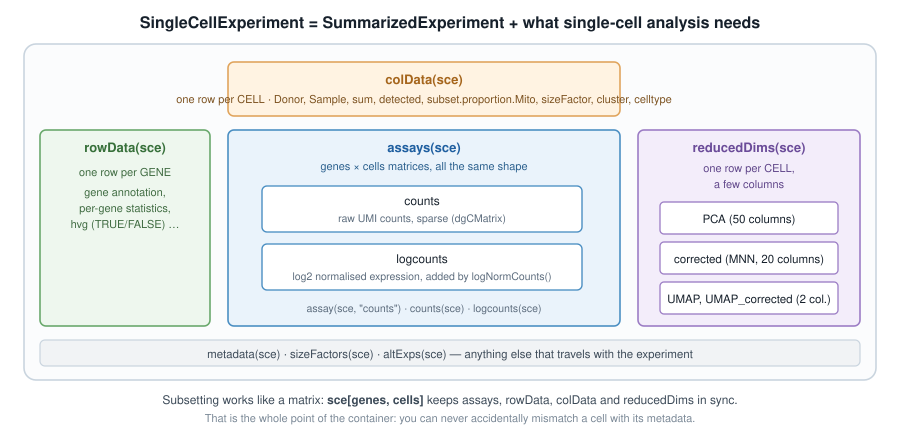
SingleCellExperiment.
A matrix of counts is not enough: we will need to keep information about every cell (donor, quality metrics, cluster…) and every gene (is it variable?), plus several transformed versions of the matrix and low-dimensional embeddings, without ever mixing up their rows and columns.
Bioconductor’s answer is the SummarizedExperiment, the container used for bulk RNA-seq: one or more matrices (the assays) of genes × samples, a table describing the rows (rowData()), and a table describing the columns (colData()), locked together. A SingleCellExperiment is a SummarizedExperiment whose columns are cells, with a few extra slots for single-cell analysis, such as reducedDims() for embeddings (Figure 2.2).
library(SingleCellExperiment)
sce <- SingleCellExperiment(assays = list(counts = counts_sparse))
sce
## class: SingleCellExperiment
## dim: 27477 6490
## metadata(0):
## assays(1): counts
## rownames(27477): RP11-34P13.3 RP11-34P13.7 ... AC136612.1 AC145212.4
## rowData names(0):
## colnames(6490): Donor2.AAACCTGGTGCCTTGG.1 Donor2.AAACCTGTCAACGGGA.1
## ... Donor1.TTTGTCAGTGTGCGTC.2 Donor1.TTTGTCATCCAAACTG.2
## colData names(0):
## reducedDimNames(0):
## mainExpName: NULL
## altExpNames(0):Read that printout: it is the map of the object. Each slot has its accessor:
dim(sce)
## [1] 27477 6490
assayNames(sce)
## [1] "counts"
counts(sce)[1:5, 1:3]
## 5 x 3 sparse Matrix of class "dgCMatrix"
## Donor2.AAACCTGGTGCCTTGG.1 Donor2.AAACCTGTCAACGGGA.1
## RP11-34P13.3 . .
## RP11-34P13.7 . .
## FO538757.3 . .
## FO538757.2 . 1
## AP006222.2 . .
## Donor2.AAACCTGTCCTATGTT.1
## RP11-34P13.3 .
## RP11-34P13.7 .
## FO538757.3 .
## FO538757.2 .
## AP006222.2 .
head(rownames(sce))
## [1] "RP11-34P13.3" "RP11-34P13.7" "FO538757.3" "FO538757.2"
## [5] "AP006222.2" "RP4-669L17.10"
head(colnames(sce), 3)
## [1] "Donor2.AAACCTGGTGCCTTGG.1" "Donor2.AAACCTGTCAACGGGA.1"
## [3] "Donor2.AAACCTGTCCTATGTT.1"2.3.1 Cell metadata is hiding in the column names
colData(sce) is empty for now. We have no sample sheet, but the name of each cell tells us where it comes from: Donor2.AAACCTGGTGCCTTGG.1 is the cell with the 16-nt barcode AAACCTGGTGCCTTGG (Section 1.2), from replicate 1 of Donor2. Split the names on the dots, and keep each piece:
$ adds a column to colData(), exactly as it adds a column to a data frame:
sce$Donor <- sapply(split_names, function(x) x[1])
sce$Barcode <- sapply(split_names, function(x) x[2])
sce$Replicate <- sapply(split_names, function(x) x[3])
sce$Sample <- paste(sce$Donor, sce$Replicate, sep = "_rep")
colData(sce)
## DataFrame with 6490 rows and 4 columns
## Donor Barcode Replicate
## <character> <character> <character>
## Donor2.AAACCTGGTGCCTTGG.1 Donor2 AAACCTGGTGCCTTGG 1
## Donor2.AAACCTGTCAACGGGA.1 Donor2 AAACCTGTCAACGGGA 1
## Donor2.AAACCTGTCCTATGTT.1 Donor2 AAACCTGTCCTATGTT 1
## Donor2.AAACCTGTCGGACAAG.1 Donor2 AAACCTGTCGGACAAG 1
## Donor2.AAACGGGAGCTATGCT.1 Donor2 AAACGGGAGCTATGCT 1
## ... ... ... ...
## Donor1.TTTGTCAAGAACTCGG.2 Donor1 TTTGTCAAGAACTCGG 2
## Donor1.TTTGTCAAGGATGGTC.2 Donor1 TTTGTCAAGGATGGTC 2
## Donor1.TTTGTCAGTAAGGGAA.2 Donor1 TTTGTCAGTAAGGGAA 2
## Donor1.TTTGTCAGTGTGCGTC.2 Donor1 TTTGTCAGTGTGCGTC 2
## Donor1.TTTGTCATCCAAACTG.2 Donor1 TTTGTCATCCAAACTG 2
## Sample
## <character>
## Donor2.AAACCTGGTGCCTTGG.1 Donor2_rep1
## Donor2.AAACCTGTCAACGGGA.1 Donor2_rep1
## Donor2.AAACCTGTCCTATGTT.1 Donor2_rep1
## Donor2.AAACCTGTCGGACAAG.1 Donor2_rep1
## Donor2.AAACGGGAGCTATGCT.1 Donor2_rep1
## ... ...
## Donor1.TTTGTCAAGAACTCGG.2 Donor1_rep2
## Donor1.TTTGTCAAGGATGGTC.2 Donor1_rep2
## Donor1.TTTGTCAGTAAGGGAA.2 Donor1_rep2
## Donor1.TTTGTCAGTGTGCGTC.2 Donor1_rep2
## Donor1.TTTGTCATCCAAACTG.2 Donor1_rep2
table(sce$Donor, sce$Replicate)
##
## 1 2
## Donor1 1000 1248
## Donor2 985 1009
## Donor3 1116 1132Three donors, two 10x runs each: six libraries, for three biological replicates. Keep that in mind: it makes all the difference in Section 2.13.
2.4 Quality control
Not every column of the matrix is a healthy cell (Section 1.6). Some barcodes are droplets that only caught ambient RNA, some are cells that were damaged or dying, some are two cells captured together. We remove the worst of them first, as they would distort every later step.
Three metrics are computed for each cell:
| Metric | Low-quality cells have | Because |
|---|---|---|
total UMI count (sum) |
few | little RNA was captured |
number of detected genes (detected) |
few | same reason |
| proportion of counts from mitochondrial genes | many | a damaged cell loses its cytoplasmic mRNA, while the transcripts inside the mitochondria stay behind |
2.4.1 Computing the metrics
Mitochondrial genes are recognisable by their symbol, which starts with MT-:
quickRnaQc.se() computes the three metrics, stores them in colData(), and flags outlier cells: a cell is an outlier when one of its metrics sits more than 3 median absolute deviations (MADs) away from the median, on the bad side (too few counts or genes, too many mitochondrial counts). Our six libraries were sequenced to different depths, so the thresholds are computed within each library, with block =.
library(scrapper)
sce <- quickRnaQc.se(
sce,
subsets = list(Mito = is_mito),
block = sce$Sample
)
colData(sce)
## DataFrame with 6490 rows and 8 columns
## Donor Barcode Replicate
## <character> <character> <character>
## Donor2.AAACCTGGTGCCTTGG.1 Donor2 AAACCTGGTGCCTTGG 1
## Donor2.AAACCTGTCAACGGGA.1 Donor2 AAACCTGTCAACGGGA 1
## Donor2.AAACCTGTCCTATGTT.1 Donor2 AAACCTGTCCTATGTT 1
## Donor2.AAACCTGTCGGACAAG.1 Donor2 AAACCTGTCGGACAAG 1
## Donor2.AAACGGGAGCTATGCT.1 Donor2 AAACGGGAGCTATGCT 1
## ... ... ... ...
## Donor1.TTTGTCAAGAACTCGG.2 Donor1 TTTGTCAAGAACTCGG 2
## Donor1.TTTGTCAAGGATGGTC.2 Donor1 TTTGTCAAGGATGGTC 2
## Donor1.TTTGTCAGTAAGGGAA.2 Donor1 TTTGTCAGTAAGGGAA 2
## Donor1.TTTGTCAGTGTGCGTC.2 Donor1 TTTGTCAGTGTGCGTC 2
## Donor1.TTTGTCATCCAAACTG.2 Donor1 TTTGTCATCCAAACTG 2
## Sample sum detected
## <character> <numeric> <integer>
## Donor2.AAACCTGGTGCCTTGG.1 Donor2_rep1 11454 4323
## Donor2.AAACCTGTCAACGGGA.1 Donor2_rep1 10149 1613
## Donor2.AAACCTGTCCTATGTT.1 Donor2_rep1 11672 2212
## Donor2.AAACCTGTCGGACAAG.1 Donor2_rep1 9140 1884
## Donor2.AAACGGGAGCTATGCT.1 Donor2_rep1 7849 1991
## ... ... ... ...
## Donor1.TTTGTCAAGAACTCGG.2 Donor1_rep2 5648 2730
## Donor1.TTTGTCAAGGATGGTC.2 Donor1_rep2 5942 3098
## Donor1.TTTGTCAGTAAGGGAA.2 Donor1_rep2 59903 7522
## Donor1.TTTGTCAGTGTGCGTC.2 Donor1_rep2 6499 1720
## Donor1.TTTGTCATCCAAACTG.2 Donor1_rep2 5910 3109
## subset.proportion.Mito keep
## <numeric> <logical>
## Donor2.AAACCTGGTGCCTTGG.1 0.00934171 TRUE
## Donor2.AAACCTGTCAACGGGA.1 0.00413834 TRUE
## Donor2.AAACCTGTCCTATGTT.1 0.01070939 TRUE
## Donor2.AAACCTGTCGGACAAG.1 0.01039387 TRUE
## Donor2.AAACGGGAGCTATGCT.1 0.00394955 TRUE
## ... ... ...
## Donor1.TTTGTCAAGAACTCGG.2 0.16643059 TRUE
## Donor1.TTTGTCAAGGATGGTC.2 0.01565130 TRUE
## Donor1.TTTGTCAGTAAGGGAA.2 0.04675893 TRUE
## Donor1.TTTGTCAGTGTGCGTC.2 0.04754578 TRUE
## Donor1.TTTGTCATCCAAACTG.2 0.00896785 TRUEThe thresholds used for each library are stored in metadata():
metadata(sce)$qc$thresholds
## $sum
## Donor1_rep1 Donor1_rep2 Donor2_rep1 Donor2_rep2 Donor3_rep1 Donor3_rep2
## 1140.182 1207.056 1599.060 1646.766 1316.144 1341.656
##
## $detected
## Donor1_rep1 Donor1_rep2 Donor2_rep1 Donor2_rep2 Donor3_rep1 Donor3_rep2
## 445.5884 468.5816 537.0300 552.4423 371.2207 345.5814
##
## $subset.proportion
## $subset.proportion$Mito
## Donor1_rep1 Donor1_rep2 Donor2_rep1 Donor2_rep2 Donor3_rep1 Donor3_rep2
## 0.22611235 0.25926253 0.09194084 0.04484880 0.07568231 0.11273757
##
##
## $block.ids
## [1] "Donor1_rep1" "Donor1_rep2" "Donor2_rep1" "Donor2_rep2" "Donor3_rep1"
## [6] "Donor3_rep2"and keep says which cells pass:
table(sce$Sample, sce$keep)
##
## FALSE TRUE
## Donor1_rep1 0 1000
## Donor1_rep2 0 1248
## Donor2_rep1 136 849
## Donor2_rep2 343 666
## Donor3_rep1 259 857
## Donor3_rep2 169 9632.4.2 Look before you filter
Always plot what you are about to throw away:
library(scater)
library(ggplot2)
library(patchwork)
p_sum <- plotColData(sce, x = "Sample", y = "sum", colour_by = "keep") +
scale_y_log10()
p_mito <- plotColData(
sce, x = "Sample", y = "subset.proportion.Mito", colour_by = "keep"
)
p_sum / p_mito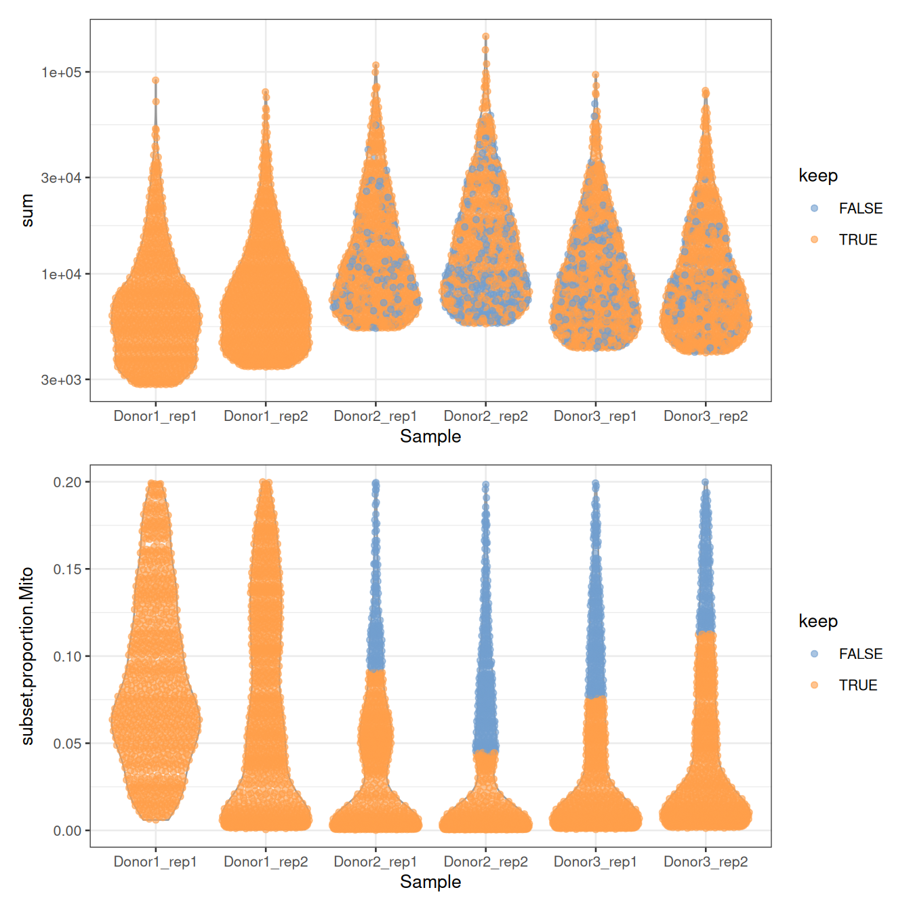
/ stacks two plots with patchwork. Notice the ceilings: no cell has more than 20% of mitochondrial counts, nor fewer than about 2,800 UMIs. The authors filtered the table before depositing it, which is common: always check what was done to the data you download.
NoteQuestion
Not a single cell of Donor1 is discarded. Why? Is it good news?
NoteAnswer
Look at the thresholds on the mitochondrial proportion, in %:
round(100 * metadata(sce)$qc$thresholds$subset.proportion$Mito)
## Donor1_rep1 Donor1_rep2 Donor2_rep1 Donor2_rep2 Donor3_rep1 Donor3_rep2
## 23 26 9 4 8 11The cells of Donor1 have more mitochondrial counts overall: the median and the MAD of its libraries are higher, and so is their threshold, above the 20% ceiling of the table. None of its cells is far enough from its own median to be flagged.
Thresholds computed within each library are relative: they assume that most cells of each library are fine, and adapt to each of them. A cell with 15% of mitochondrial counts is thus discarded from Donor2 and Donor3, but kept in Donor1. A fixed threshold, say sce$subset.proportion.Mito < 0.1, would treat all libraries the same. Neither choice is right in general: make it knowingly, and look at the plots.
We’ll skip filtering for now and retain all cells.
We keep 5,583 cells.
NoteGoing further: doublets and ambient RNA
Two more filters are often applied, which we skip today for lack of time: doublets can be found with scDblFinder (Germain et al. 2021), and the contamination by ambient RNA can be estimated and removed with decontX or SoupX.
2.5 Normalisation
Two cells can have different total counts for biological reasons (one is bigger, or more active) or technical ones (one was captured, reverse-transcribed or sequenced more efficiently). Normalisation removes the technical part, so that expression values can be compared between cells.
The simplest approach divides the counts of each cell by a size factor proportional to its library size, its total UMI count. The normalised values are then log-transformed: a pseudo-count of 1 avoids taking the log of zero, and the log turns fold changes into differences, so that a few very highly expressed genes do not dominate everything else.
sce <- normalizeRnaCounts.se(
sce,
size.factors = sce$sum,
block = sce$Sample
)
summary(sce$sizeFactor)
## Min. 1st Qu. Median Mean 3rd Qu. Max.
## 0.3386 0.6902 1.0086 1.4948 1.7487 17.9720
assayNames(sce)
## [1] "counts" "logcounts"With block = sce$Sample, the size factors also account for the six libraries having been sequenced to different depths. logcounts holds \(\log_2(\text{count} / \text{size factor} + 1)\):
logcounts(sce)[c("PRM1", "SOX9", "ACTA2"), 1:3]
## <3 x 3> sparse DelayedMatrix object of type "double":
## Donor2.AAACCTGGTGCCTTGG.1 Donor2.AAACCTGTCAACGGGA.1
## PRM1 7.211376 11.360510
## SOX9 0.000000 0.000000
## ACTA2 0.000000 0.000000
## Donor2.AAACCTGTCCTATGTT.1
## PRM1 11.101815
## SOX9 0.000000
## ACTA2 0.000000From now on, everything about expression uses logcounts; everything about counts, such as differential expression (Section 2.13), goes back to counts.
NoteGoing further: composition bias
When cell types express very different sets of genes, library size factors are slightly biased: this is composition bias. It rarely changes the clusters, but scran’s deconvolution method corrects it (Lun et al. 2016): compute the size factors with scuttle::pooledSizeFactors(sce, clusters = scran::quickCluster(sce)), and pass them to normalizeRnaCounts.se(size.factors = ...).
2.6 Feature selection
Of the 27,477 genes, most are not expressed at all, or expressed at similar levels in every cell. They carry no information about which cell is which, but add noise to every comparison between cells. We keep the highly variable genes (HVGs): those whose variance across cells is much larger than expected for a gene of the same average expression.
sce <- chooseRnaHvgs.se(sce, block = sce$Sample, top = 2000)
rowData(sce)
## DataFrame with 27477 rows and 5 columns
## means variances fitted residuals hvg
## <numeric> <numeric> <numeric> <numeric> <logical>
## RP11-34P13.3 0.00151787 0.00120802 0.00159690 -0.000388886 FALSE
## RP11-34P13.7 0.00841877 0.00679390 0.00947646 -0.002682559 FALSE
## FO538757.3 0.00189164 0.00167327 0.00213801 -0.000464741 FALSE
## FO538757.2 0.28648468 0.25988065 0.26368683 -0.003806179 FALSE
## AP006222.2 0.21583228 0.20760767 0.19892968 0.008677993 FALSE
## ... ... ... ... ... ...
## CMP21-97G8.2 0.000257234 0.000221711 0.000322184 -1.00473e-04 FALSE
## AF064858.7 0.000263561 0.000208246 0.000346215 -1.37970e-04 FALSE
## LINC00165 0.000361595 0.000253216 0.000452895 -1.99680e-04 FALSE
## AC136612.1 0.001369787 0.001432333 0.001817273 -3.84940e-04 FALSE
## AC145212.4 0.000541101 0.000728393 0.000688319 4.00744e-05 FALSE
sum(rowData(sce)$hvg)
## [1] 2000rowData() now holds, for each gene, its mean and variance of expression, the variance expected from the trend fitted to all genes (fitted), the excess over that trend (residuals), and whether it is one of the 2,000 HVGs:
gene_stats <- as.data.frame(rowData(sce))
ggplot(gene_stats, aes(x = means, y = variances, colour = hvg)) +
geom_point(size = 0.5) +
geom_line(aes(y = fitted), colour = "dodgerblue", linewidth = 1) +
scale_colour_manual(values = c(`FALSE` = "grey70", `TRUE` = "firebrick")) +
labs(x = "Mean of log-expression", y = "Variance of log-expression") +
theme_bw()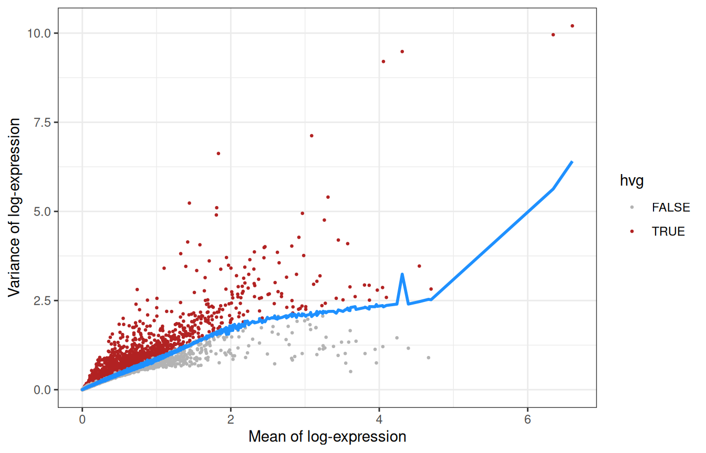
The genes furthest above the trend:
Recognise anything? TNP1, PRM1 and PRM2 (transition protein and protamines), HMGB4 and LELP1 are expressed late in spermatogenesis, while PTGDS, IGFBP7 or DCN come from somatic cells: feature selection has found the main axes of variation of a testis without being told anything about testes.
2.7 Dimensionality reduction
2.7.1 PCA
2,000 genes are still 2,000 dimensions. A principal component analysis (PCA) compresses them into a few dozen components that capture most of the structure. Since biology is concentrated in the first components while noise is spread evenly across all of them, PCA also denoises the data.
sce <- runPca.se(sce, features = rowData(sce)$hvg, number = 25)
reducedDimNames(sce)
## [1] "PCA"
dim(reducedDim(sce, "PCA"))
## [1] 5583 25How much of the variance does each component explain?
pca_info <- metadata(sce)$PCA
percent_var <- 100 * pca_info$variance.explained / pca_info$total.variance
pca_df <- data.frame(PC = seq_along(percent_var), percent = percent_var)
ggplot(pca_df, aes(x = PC, y = percent)) +
geom_col() +
labs(x = "Principal component", y = "Variance explained (%)") +
theme_bw()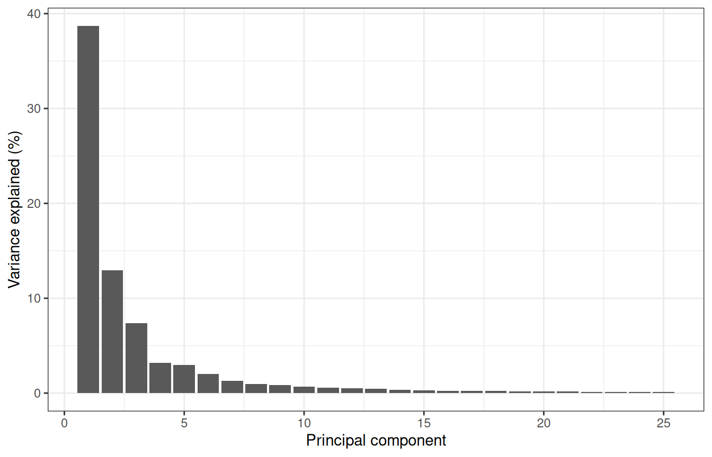
The first components carry most of the signal, and we keep 25, scrapper’s default: anything between 10 and 50 would give a similar picture here.
plotReducedDim(sce, "PCA", colour_by = "Donor")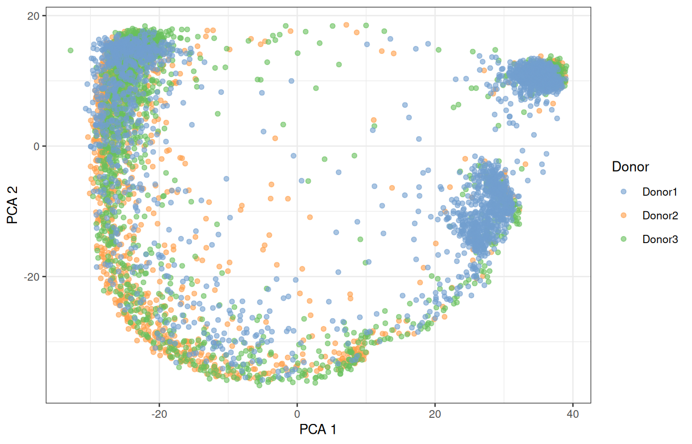
2.7.2 UMAP
The first two PCs only show part of the structure. UMAP (McInnes et al. 2018) squeezes all 25 PCs into two dimensions that we can look at:
sce <- runUmap.se(sce)
plotReducedDim(sce, "UMAP", colour_by = "Donor")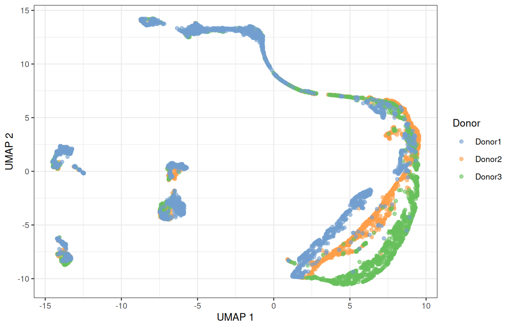
ImportantA UMAP is a picture, not a measurement
UMAP keeps cells that are close in the PCA space close in the picture, but distances between distant groups, and the size of a group, mean little. Use it to look at the data, and run the analysis itself on the PCs.
2.8 Batch effects
Do the donors overlap, or does each of them form its own island? That is the first thing to look at, every time. Here, several populations split by donor. Part of that is biology (donors are different people) and part is technical: their samples were collected and processed separately. If we cluster now, some clusters will be donors rather than cell types.
The mutual nearest neighbours (MNN) method (Haghverdi et al. 2018) pairs cells across donors that are each other’s closest match: such pairs are assumed to be the same cell type, and the differences between them measure the batch effect, which is then removed from all cells. correctMnn.se() stores the corrected PCs as a new reduced dimension, MNN:
sce <- correctMnn.se(sce, block = sce$Donor)
reducedDimNames(sce)
## [1] "PCA" "UMAP" "MNN"
sce <- runUmap.se(sce, reddim.type = "MNN", output.name = "UMAP_MNN")
plotReducedDim(sce, "UMAP_MNN", colour_by = "Donor")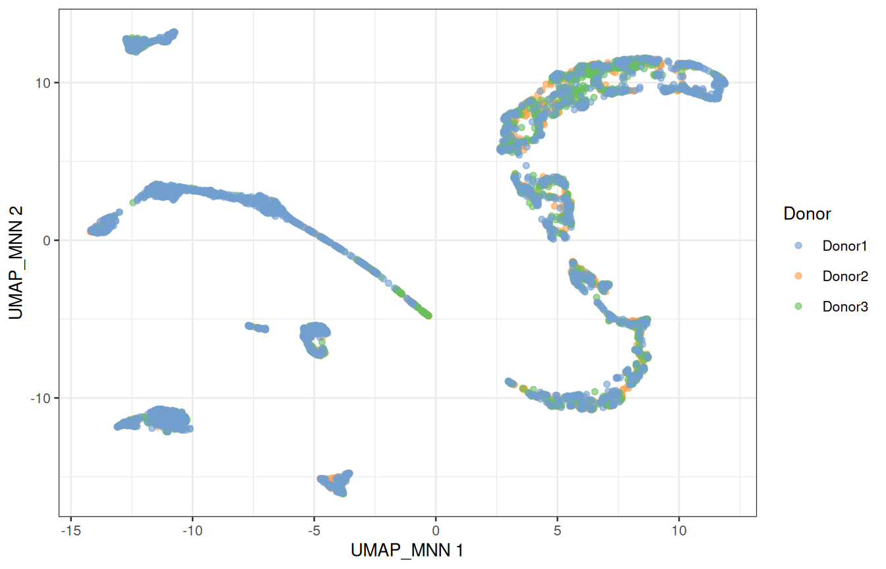
2.8.1 Is any of this real?
Before trusting a picture, check it against something you know (Figure 1.5): UTF1 marks spermatogonial stem cells, SYCP3 meiotic spermatocytes, PRM2 spermatids, and ACTA2 the peritubular myoid cells, a somatic population.
plotReducedDim(sce, "UMAP_MNN", colour_by = "UTF1") +
plotReducedDim(sce, "UMAP_MNN", colour_by = "SYCP3") +
plotReducedDim(sce, "UMAP_MNN", colour_by = "PRM2") +
plotReducedDim(sce, "UMAP_MNN", colour_by = "ACTA2")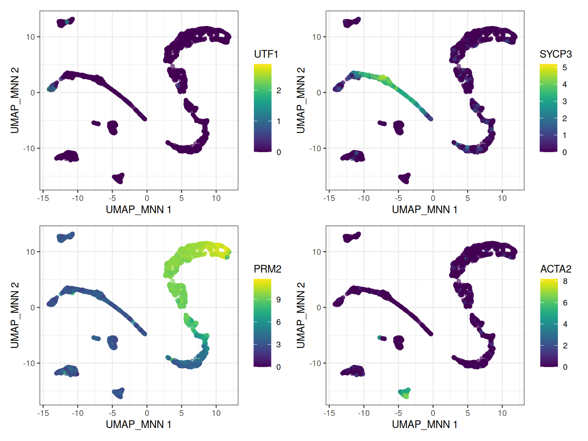
The germ cells line up along one continuous path, from stem cells to spermatids: the trajectory of spermatogenesis. The somatic cells form separate islands.
ImportantCorrected values are for maps and clusters only
Batch correction changes the data to make donors look alike. Use the corrected space to visualise and cluster the cells, never to test for differential expression: for that, we go back to the raw counts and model the donor explicitly (Section 2.13).
2.9 ☕ Break, and checkpoint
Look at everything the object now holds:
sce
## class: SingleCellExperiment
## dim: 27477 5583
## metadata(2): qc PCA
## assays(2): counts logcounts
## rownames(27477): RP11-34P13.3 RP11-34P13.7 ... AC136612.1 AC145212.4
## rowData names(5): means variances fitted residuals hvg
## colnames(5583): Donor2.AAACCTGGTGCCTTGG.1 Donor2.AAACCTGTCAACGGGA.1
## ... Donor1.TTTGTCAGTGTGCGTC.2 Donor1.TTTGTCATCCAAACTG.2
## colData names(9): Donor Barcode ... keep sizeFactor
## reducedDimNames(4): PCA UMAP MNN UMAP_MNN
## mainExpName: NULL
## altExpNames(0):Two assays, quality metrics and size factors in colData(), gene statistics in rowData(), and four reduced dimensions: one hour of work in a single variable.
TipFallen behind? Start again from here
The workshop package holds a copy of sce as it is at this point, without the logcounts to keep it small. Restart R (Session > Restart R), then load it and compute the logcounts again, as in Section 2.5:
library(SingleCellExperiment)
library(scrapper)
library(scater)
library(ggplot2)
library(patchwork)
sce <- GenE2scRNAseqIntro::sce_checkpoint
sce <- normalizeRnaCounts.se(sce, size.factors = sce$sum, block = sce$Sample)2.10 Clustering
In bulk RNA-seq, you know your groups: treated and untreated, tumour and normal. In single-cell RNA-seq, the groups are what you are looking for.
The standard approach is graph-based clustering:
- connect each cell to its nearest neighbours in the (corrected) PCA space;
- weight each connection by the number of neighbours the two cells share;
- cut the graph into communities of densely connected cells, with a community-detection algorithm (Louvain, Leiden…).
It scales to millions of cells and makes no assumption about the shape of the clusters.
sce <- clusterGraph.se(sce, reddim.type = "MNN")
table(sce$clusters)
##
## 1 2 3 4 5 6 7 8 9 10 11 12 13 14 15 16 17 18 19
## 376 268 340 482 174 358 223 244 289 298 369 287 330 317 346 339 135 235 173
plotReducedDim(sce, "UMAP_MNN", colour_by = "clusters", text_by = "clusters")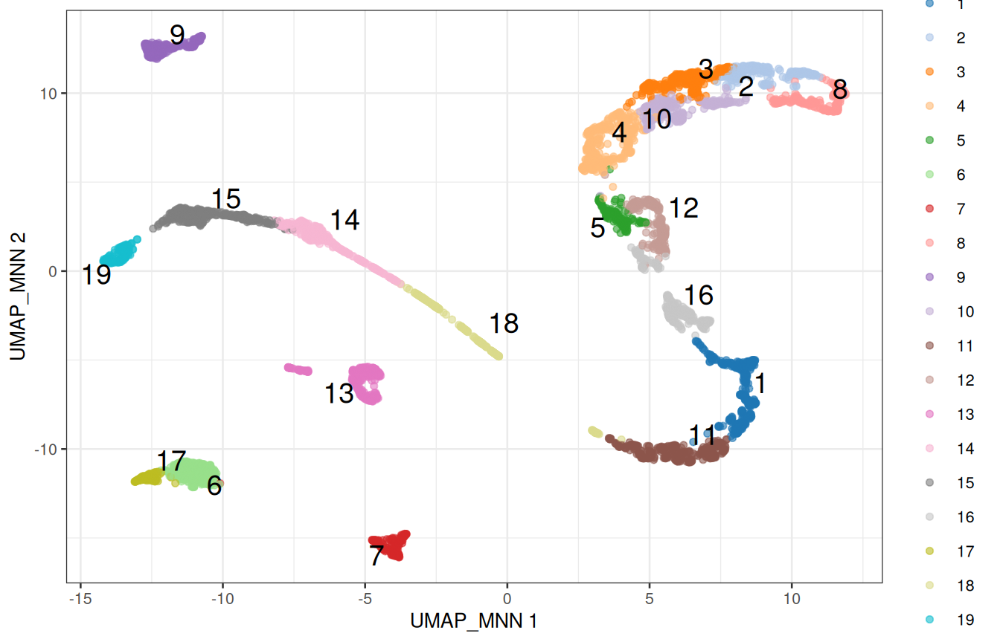
2.10.1 The number of neighbours is a resolution dial
With few neighbours, the graph is sparse and splits into many small communities; with many neighbours, it forms fewer, larger ones:
neighbours <- c(5, 10, 20, 50)
n_clusters <- sapply(neighbours, function(k) {
sce_k <- clusterGraph.se(sce, reddim.type = "MNN", num.neighbors = k)
length(unique(sce_k$clusters))
})
data.frame(neighbours, n_clusters)
## neighbours n_clusters
## 1 5 28
## 2 10 19
## 3 20 15
## 4 50 13There is no correct number of clusters, only the resolution at which the biology you care about becomes visible. Clustering is a tool to generate hypotheses, not a measurement: if two clusters have the same markers, merge them; if a cluster obviously contains two cell types, split it.
2.11 Marker genes
Clusters are numbers; biology needs names. Two complementary approaches: check genes we already know, and ask the data which genes distinguish each cluster.
2.11.1 Known markers
Figure 1.5 lists genes that mark each cell type of the testis:
panels <- list(
SSC = c("UTF1", "ID4", "PIWIL4"),
Spermatogonia = c("DMRT1", "KIT", "MKI67"),
Spermatocyte = c("SYCP3", "DMC1", "SPO11"),
RoundSpermatid = c("SUN5", "ACR", "BRDT"),
ElongSpermatid = c("TNP1", "PRM1", "PRM2"),
Sertoli = c("SOX9", "AMH"),
Leydig = c("DLK1", "INHBA", "CYP17A1"),
Myoid = c("MYH11", "ACTA2"),
Endothelial = c("VWF", "PECAM1"),
Macrophage = c("CD14", "TYROBP")
)plotDots(sce, features = unlist(panels), group = "clusters") +
theme(axis.text.x = element_text(angle = 45, hjust = 1))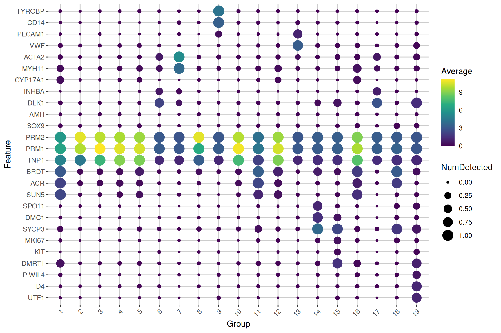
The size of a dot is the fraction of the cells of a cluster in which the gene is detected; its colour, the average expression in the cluster. Read along each cluster, and the names start writing themselves.
2.11.2 Markers found by the data
scoreMarkers.se() compares each cluster with every other one, gene by gene, and summarises the comparisons with effect sizes: Cohen’s d (the difference in mean expression, in units of standard deviation), the AUC (the probability that a cell of the cluster expresses the gene more than a cell of the other cluster), or the difference in the proportion of cells expressing it. Blocking on the donor makes the comparisons within each donor.
markers <- scoreMarkers.se(sce, groups = sce$clusters, block = sce$Donor)
names(markers)
## [1] "1" "2" "3" "4" "5" "6" "7" "8" "9" "10" "11" "12" "13" "14"
## [15] "15" "16" "17" "18" "19"One table per cluster, with genes sorted by their average Cohen’s d against the other clusters. previewMarkers() shows the essential columns: the mean expression in the cluster, the proportion of its cells expressing the gene, and the average log-fold change with the other clusters.
previewMarkers(markers[["1"]])
## DataFrame with 10 rows and 3 columns
## mean detected lfc
## <numeric> <numeric> <numeric>
## FAM209A 3.81715 1.000000 3.23254
## ERICH2 4.07027 1.000000 3.43419
## FAM209B 3.52768 0.997340 2.99865
## SPACA1 3.19499 0.997340 2.94081
## SPACA4 2.84263 0.997340 2.43344
## ACTL7B 3.09472 0.997340 2.35299
## WBSCR28 2.77236 1.000000 2.33354
## ACTRT3 2.89559 0.992021 2.47236
## FAM229A 4.36613 1.000000 2.72686
## CDKN3 3.79537 0.997340 2.63692Plot the best marker of cluster 1 on the map:
top_gene <- rownames(markers[["1"]])[1]
plotReducedDim(sce, "UMAP_MNN", colour_by = top_gene, text_by = "clusters")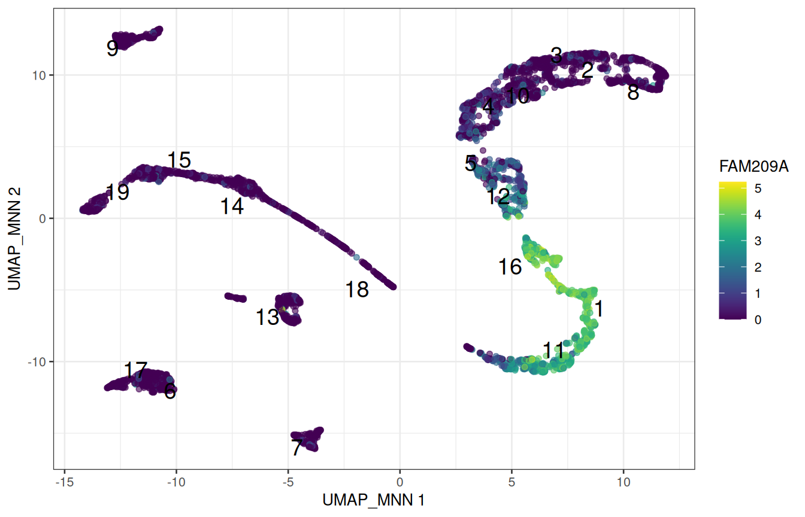
NoteQuestion
Pick a cluster that looks somatic on the dot plot, and look at its top markers. Do they agree with Figure 1.5?
Why do we look at effect sizes, and not at p-values, to rank marker genes?
NoteAnswer
Replace "1" with the cluster of your choice, e.g. previewMarkers(markers[["7"]]).
The clusters were defined from these very expression values, precisely to separate cells that differ. Testing whether they differ would be circular: the p-values would all be tiny, and mean nothing. Effect sizes still rank genes by how well they separate the clusters, which is all we need here.
2.12 Annotation with a reference
Annotating by hand does not scale, and only finds what you thought of looking for. The alternative is to compare the cells with a reference: a dataset whose cell types are already known.
SingleR (Aran et al. 2019) correlates each cell, or here each cluster, with the profile of each cell type of the reference, using only genes that distinguish the reference cell types, and keeps the best match. The workshop package provides a reference built from the single-cell type atlas of the Human Protein Atlas (Karlsson et al. 2021): the average expression of each gene in 154 cell types from many tissues, the testis included.
HPA_ref <- GenE2scRNAseqIntro::HPA_ref
HPA_ref
## class: SummarizedExperiment
## dim: 20151 154
## metadata(0):
## assays(1): logcounts
## rownames(20151): TSPAN6 TNMD ... ENSG00000291316 TMEM276
## rowData names(0):
## colnames(154): adipocytes adrenal cortex cells ... vascular
## endothelial cells vascular smooth muscle cells
## colData names(1): label
head(sort(unique(HPA_ref$label)), 20)
## [1] "adipocytes" "adrenal cortex cells"
## [3] "adrenal medulla cells" "alveolar cells type 1"
## [5] "alveolar cells type 2" "astrocytes"
## [7] "b-cells" "basal keratinocytes"
## [9] "basal prostatic cells" "bergmann glia"
## [11] "brain excitatory neurons" "brain inhibitory neurons"
## [13] "breast hormone-responsive cells" "breast lactating cells"
## [15] "breast myoepithelial cells" "breast secretory cells"
## [17] "cardiomyocytes" "cdc"
## [19] "cholangiocytes" "choroid plexus epithelial cells"With clusters =, SingleR first pools the cells of each cluster, and labels the cluster as a whole: a pooled profile is much less noisy than a single cell.
library(SingleR)
pred <- SingleR(
test = sce,
ref = HPA_ref,
labels = HPA_ref$label,
clusters = sce$clusters
)
pred[, c("labels", "pruned.labels")]
## DataFrame with 19 rows and 2 columns
## labels pruned.labels
## <character> <character>
## 1 early spermatids early spermatids
## 2 late spermatids late spermatids
## 3 late spermatids late spermatids
## 4 late spermatids late spermatids
## 5 late spermatids late spermatids
## ... ... ...
## 15 differentiating sper.. differentiating sper..
## 16 early spermatids early spermatids
## 17 leydig cells leydig cells
## 18 late primary spermat.. late primary spermat..
## 19 undifferentiated spe.. undifferentiated spe..pred has one row per cluster. To give each cell the label of its cluster, use a named vector as a lookup table:
label_of_cluster <- setNames(pred$labels, rownames(pred))
sce$celltype <- label_of_cluster[as.character(sce$clusters)]
table(sce$celltype)
##
## differentiating spermatogonia early primary spermatocytes
## 346 317
## early spermatids late primary spermatocytes
## 715 604
## late spermatids leydig cells
## 2093 493
## macrophages peritubular myoid cells
## 289 223
## undifferentiated spermatogonia vascular endothelial cells
## 173 330plotReducedDim(
sce, "UMAP_MNN",
colour_by = "celltype", text_by = "celltype", text_size = 3.5
)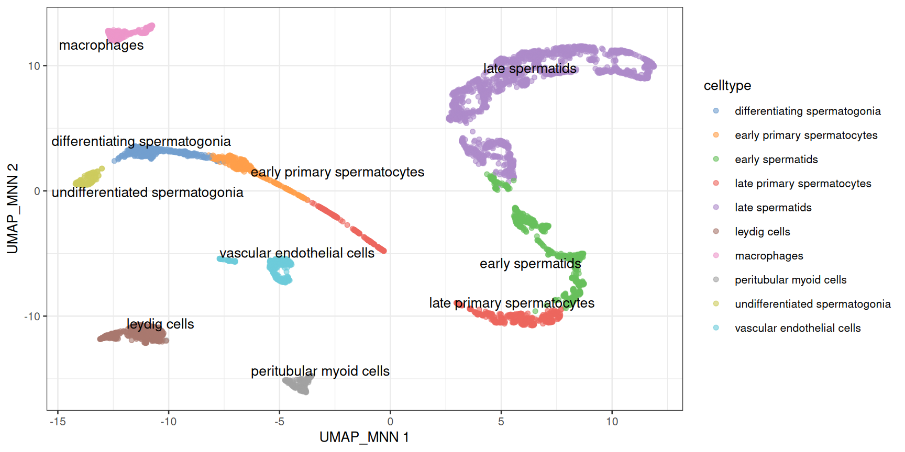
Two things to observe on this map:
- The germ-cell labels line up along the differentiation path, in developmental order. Spermatogenesis is a trajectory, and clustering has cut it into segments whose boundaries depend on the resolution: do not over-interpret them.
- The somatic labels mark discrete populations: their boundaries are real.
NoteQuestion
In Section 2.10, a few clusters were dominated by Donor1. Which cell types are they?
NoteAnswer
table(sce$celltype, sce$Donor)
##
## Donor1 Donor2 Donor3
## differentiating spermatogonia 288 10 48
## early primary spermatocytes 269 12 36
## early spermatids 155 294 266
## late primary spermatocytes 137 242 225
## late spermatids 527 640 926
## leydig cells 270 107 116
## macrophages 135 71 83
## peritubular myoid cells 115 89 19
## undifferentiated spermatogonia 129 13 31
## vascular endothelial cells 223 37 70Donor1 contributes most of the spermatogonia and of the early spermatocytes. The cells of the other donors are present in the same clusters, just rarer: these samples differ in composition, which is biology (or sampling), not a batch effect.
WarningA reference only knows what it contains
SingleR always returns the closest label, even when the right one is not in the reference: check the labels against the markers. pruned.labels is NA for the clusters whose best label barely beats the second best, which deserve a second look.
2.13 Pseudobulk differential expression
2.13.1 The unit of replication is the donor
We could compare two groups of cells directly, with thousands of cells per group. But cells from the same donor are not independent observations: they share a genome, a history and a sample preparation. Three donors are three biological replicates, whether they gave 600 cells or 600,000. Tests that treat each cell as a replicate give wildly over-confident p-values (Squair et al. 2021).
The standard solution is the pseudobulk: sum the counts of all the cells of one cell type within one donor. This gives back a small, bulk-like matrix, with one column per cell type and donor, which bulk RNA-seq tools such as DESeq2 (Love et al. 2014) analyse well. The two 10x runs of each donor are technical replicates: they are summed too.
pb <- aggregateAcrossCells.se(
sce,
factors = colData(sce)[, c("celltype", "Donor")]
)
pb
## class: RangedSummarizedExperiment
## dim: 27477 30
## metadata(1): aggregated
## assays(2): sums detected
## rownames(27477): RP11-34P13.3 RP11-34P13.7 ... AC136612.1 AC145212.4
## rowData names(5): means variances fitted residuals hvg
## colnames: NULL
## colData names(14): factor.celltype factor.Donor ... clusters
## celltype
head(colData(pb)[, c("factor.celltype", "factor.Donor", "counts")])
## DataFrame with 6 rows and 3 columns
## factor.celltype factor.Donor counts
## <character> <character> <integer>
## 1 differentiating sper.. Donor1 288
## 2 differentiating sper.. Donor2 10
## 3 differentiating sper.. Donor3 48
## 4 early primary sperma.. Donor1 269
## 5 early primary sperma.. Donor2 12
## 6 early primary sperma.. Donor3 36Each column of pb is one cell type in one donor; the counts column of colData(pb) says how many cells were summed. Let’s compare the two earliest germ-cell populations: the spermatogonial stem cells (undifferentiated spermatogonia) and the spermatogonia that have started to differentiate.
spermatogonia <- c(
"undifferentiated spermatogonia",
"differentiating spermatogonia"
)
pb_sg <- pb[, pb$factor.celltype %in% spermatogonia]
samples <- data.frame(
celltype = factor(pb_sg$factor.celltype, levels = spermatogonia),
donor = factor(pb_sg$factor.Donor),
ncells = pb_sg$counts
)
samples
## celltype donor ncells
## 1 differentiating spermatogonia Donor1 288
## 2 differentiating spermatogonia Donor2 10
## 3 differentiating spermatogonia Donor3 48
## 4 undifferentiated spermatogonia Donor1 129
## 5 undifferentiated spermatogonia Donor2 13
## 6 undifferentiated spermatogonia Donor3 31
2.13.2 Testing with DESeq2
Note
DESeq2 in a nutshell
DESeq2 models the raw counts of each gene with a negative binomial distribution, corrects for differences in library size with its own size factors, and shares information across genes to estimate how variable each gene is between replicates. The design formula describes the experiment: ~ donor + celltype compares the two cell types within each donor, which is a paired design, and removes the differences between donors.
library(DESeq2)
dds <- DESeqDataSetFromMatrix(
countData = assay(pb_sg, "sums"),
colData = samples,
design = ~ donor + celltype
)
dds <- dds[rowSums(counts(dds) >= 10) >= 3, ]
dds <- DESeq(dds)
res <- results(
dds,
contrast = c(
"celltype",
"differentiating spermatogonia", # numerator
"undifferentiated spermatogonia" # denominator
)
)
summary(res)
##
## out of 9296 with nonzero total read count
## adjusted p-value < 0.1
## LFC > 0 (up) : 1276, 14%
## LFC < 0 (down) : 1551, 17%
## outliers [1] : 0, 0%
## low counts [2] : 0, 0%
## (mean count < 4)
## [1] see 'cooksCutoff' argument of ?results
## [2] see 'independentFiltering' argument of ?resultsThe first line keeps the genes with at least 10 counts in at least 3 of the 6 pseudo-samples. A positive log-fold change means a higher expression in the differentiating spermatogonia. The most significant genes:
res_df <- as.data.frame(res)
res_df <- res_df[order(res_df$padj), ]
head(res_df[, c("baseMean", "log2FoldChange", "padj")], 10)
## baseMean log2FoldChange padj
## GLTSCR2 330.7308 -3.092754 4.469290e-37
## GNB2L1 908.1871 -2.704693 1.088643e-35
## RPS4X 500.3155 -3.806374 2.286257e-34
## RPS12 5573.5759 -2.169381 8.037935e-33
## ID1 106.1675 -6.733731 3.563133e-30
## FKBP8 377.5046 -2.765938 3.563133e-30
## ZNF428 366.4472 -3.265353 1.155811e-29
## SMC1B 309.8769 2.639109 1.515493e-28
## TPT1 1201.1534 -2.122662 2.288828e-28
## TUBB 206.6682 -3.281781 1.285149e-27Without being told anything, the test recovers the biology of the testis: the stem-cell markers of Figure 1.5 are higher in the undifferentiated cells, and genes of meiosis such as SYCP3 are switched on in the differentiating ones.
res_df <- res_df[!is.na(res_df$padj), ]
ggplot(res_df, aes(x = log2FoldChange, y = -log10(padj), colour = padj < 0.05)) +
geom_point(size = 0.8) +
scale_colour_manual(values = c(`FALSE` = "grey70", `TRUE` = "firebrick")) +
labs(
x = "log2 fold change, differentiating / undifferentiated",
y = "-log10(adjusted p-value)"
) +
theme_bw()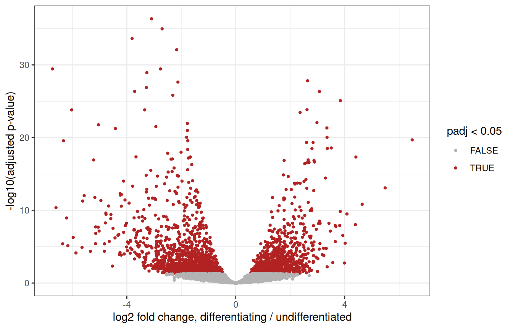
WarningWhat this test can, and cannot, tell you
Our two groups were defined from the expression data, by clustering: they were chosen to be different, so the p-values above are optimistic. Here, DESeq2 mostly helps rank genes.
Pseudobulk analyses shine when the groups are defined independently of the expression data: comparing conditions (healthy vs infertile donors, treated vs untreated…) within one cell type, with several donors per condition. The code is exactly the same, with ~ condition in the design.
2.14 Wrap-up
2.14.1 What we did
# read the counts, and build the object
umi <- read.delim(umi_path, header = TRUE, row.names = 1)
counts_sparse <- Matrix(as.matrix(umi), sparse = TRUE)
sce <- SingleCellExperiment(assays = list(counts = counts_sparse))
split_names <- strsplit(colnames(sce), "\\.")
sce$Donor <- sapply(split_names, function(x) x[1])
sce$Replicate <- sapply(split_names, function(x) x[3])
sce$Sample <- paste(sce$Donor, sce$Replicate, sep = "_rep")
# quality control
is_mito <- grepl("^MT-", rownames(sce))
sce <- quickRnaQc.se(sce, subsets = list(Mito = is_mito), block = sce$Sample)
sce <- sce[, sce$keep]
# normalisation, feature selection, PCA
sce <- normalizeRnaCounts.se(sce, size.factors = sce$sum, block = sce$Sample)
sce <- chooseRnaHvgs.se(sce, block = sce$Sample, top = 2000)
sce <- runPca.se(sce, features = rowData(sce)$hvg, number = 25)
# batch correction, UMAP
sce <- correctMnn.se(sce, block = sce$Donor)
sce <- runUmap.se(sce, reddim.type = "MNN", output.name = "UMAP_MNN")
# clusters, markers, cell types
sce <- clusterGraph.se(sce, reddim.type = "MNN")
markers <- scoreMarkers.se(sce, groups = sce$clusters, block = sce$Donor)
pred <- SingleR(sce, ref = HPA_ref, labels = HPA_ref$label, clusters = sce$clusters)
sce$celltype <- setNames(pred$labels, rownames(pred))[as.character(sce$clusters)]
# pseudobulk
pb <- aggregateAcrossCells.se(sce, factors = colData(sce)[, c("celltype", "Donor")])About twenty lines of code. Everything else was looking at the results and deciding whether to believe them, which is the actual job.
2.14.2 Where to go next
- The
scrapbookand OSCA books (Amezquita et al. 2020) explain each of these steps, and their alternatives, in depth. - Spermatogenesis is a trajectory: pseudotime methods such as
TSCANorslingshotorder the cells along it. - For spatial transcriptomics, the OSTA book applies the same containers and many of the same steps to Visium and other technologies.
2.14.3 Exercises
1. Batch effects. Cluster the cells on the uncorrected PCs, and redo the composition plot of Section 2.10. What changed?
NoteAnswer
sce$clusters_uncorrected <- clusterGraph.se(sce, reddim.type = "PCA")$clusters
composition <- table(cluster = sce$clusters_uncorrected, donor = sce$Donor)
ggplot(as.data.frame(composition), aes(x = cluster, y = Freq, fill = donor)) +
geom_col(position = "fill")Several clusters now contain cells of a single donor: without correction, part of the clustering separates donors rather than cell types.
2. Feature selection. Redo the analysis with the top 500, then the top 5,000 HVGs, and compare the UMAPs. How sensitive is the picture to that choice?
NoteAnswer
sce_500 <- chooseRnaHvgs.se(sce, block = sce$Sample, top = 500)
sce_500 <- runPca.se(sce_500, features = rowData(sce_500)$hvg, number = 25)
sce_500 <- correctMnn.se(sce_500, block = sce_500$Donor)
sce_500 <- runUmap.se(sce_500, reddim.type = "MNN", output.name = "UMAP_MNN")
plotReducedDim(sce_500, "UMAP_MNN", colour_by = "celltype")Then the same with top = 5000. The overall structure is robust; the fine details of the map are not.
3. Another reference. Annotate the clusters with the Human Primary Cell Atlas, a reference of purified cell types from the celldex package (it is already downloaded in the workshop environment). Which populations does it recognise, and what does it call the germ cells?
NoteAnswer
hpca <- celldex::HumanPrimaryCellAtlasData()
pred_hpca <- SingleR(
test = sce, ref = hpca, labels = hpca$label.main, clusters = sce$clusters
)
data.frame(cluster = rownames(pred), HPA = pred$labels, HPCA = pred_hpca$labels)The Human Primary Cell Atlas contains no germ cells: SingleR still gives them the closest label it has. A reference can only recognise what it contains.
4. Somatic cells. Compare the Leydig cells with the peritubular myoid cells, with a pseudobulk analysis. Which genes come up?
NoteAnswer
somatic <- c("leydig cells", "peritubular myoid cells")
pb_soma <- pb[, pb$factor.celltype %in% somatic]
samples_soma <- data.frame(
celltype = factor(pb_soma$factor.celltype, levels = somatic),
donor = factor(pb_soma$factor.Donor)
)
dds_soma <- DESeqDataSetFromMatrix(
countData = assay(pb_soma, "sums"),
colData = samples_soma,
design = ~ donor + celltype
)
dds_soma <- dds_soma[rowSums(counts(dds_soma) >= 10) >= 3, ]
dds_soma <- DESeq(dds_soma)
res_soma <- as.data.frame(results(dds_soma))
head(res_soma[order(res_soma$padj), ], 10)Session info
NoteClick to expand 👇
sessionInfo()
## R version 4.6.1 (2026-06-24)
## Platform: x86_64-pc-linux-gnu
## Running under: Ubuntu 24.04.5 LTS
##
## Matrix products: default
## BLAS: /usr/lib/x86_64-linux-gnu/openblas-pthread/libblas.so.3
## LAPACK: /usr/lib/x86_64-linux-gnu/openblas-pthread/libopenblasp-r0.3.26.so; LAPACK version 3.12.0
##
## locale:
## [1] LC_CTYPE=en_US.UTF-8 LC_NUMERIC=C
## [3] LC_TIME=en_US.UTF-8 LC_COLLATE=C
## [5] LC_MONETARY=en_US.UTF-8 LC_MESSAGES=en_US.UTF-8
## [7] LC_PAPER=en_US.UTF-8 LC_NAME=C
## [9] LC_ADDRESS=C LC_TELEPHONE=C
## [11] LC_MEASUREMENT=en_US.UTF-8 LC_IDENTIFICATION=C
##
## time zone: Etc/UTC
## tzcode source: system (glibc)
##
## attached base packages:
## [1] stats4 stats graphics grDevices utils datasets methods
## [8] base
##
## other attached packages:
## [1] DESeq2_1.53.6 SingleR_2.15.4
## [3] patchwork_1.3.2 scater_1.41.3
## [5] ggplot2_4.0.3 scuttle_1.23.2
## [7] scrapper_1.7.9 SingleCellExperiment_1.35.2
## [9] SummarizedExperiment_1.43.0 Biobase_2.73.2
## [11] GenomicRanges_1.65.4 Seqinfo_1.3.2
## [13] IRanges_2.47.5 S4Vectors_0.51.10
## [15] BiocGenerics_0.59.12 generics_0.1.4
## [17] MatrixGenerics_1.25.0 matrixStats_1.5.0
## [19] Matrix_1.7-6 BiocFileCache_3.3.0
## [21] dbplyr_2.6.0
##
## loaded via a namespace (and not attached):
## [1] tidyselect_1.2.1 viridisLite_0.4.3
## [3] dplyr_1.2.1 vipor_0.4.7
## [5] farver_2.1.2 blob_1.3.0
## [7] filelock_1.0.3 viridis_0.6.5
## [9] S7_0.2.2 fastmap_1.2.0
## [11] digest_0.6.39 rsvd_1.0.6
## [13] lifecycle_1.0.5 RSQLite_3.53.3
## [15] magrittr_2.0.5 compiler_4.6.1
## [17] rlang_1.3.0 tools_4.6.1
## [19] yaml_2.3.12 knitr_1.52
## [21] labeling_0.4.3 S4Arrays_1.13.2
## [23] htmlwidgets_1.6.4 bit_4.6.0
## [25] curl_8.1.0 DelayedArray_0.39.8
## [27] RColorBrewer_1.1-3 abind_1.4-8
## [29] BiocParallel_1.47.0 withr_3.0.3
## [31] purrr_1.2.2 grid_4.6.1
## [33] beachmat_2.29.3 scales_1.4.0
## [35] cli_3.6.6 rmarkdown_2.32
## [37] otel_0.2.0 DBI_1.3.0
## [39] ggbeeswarm_0.7.3 cachem_1.1.0
## [41] parallel_4.6.1 XVector_0.53.0
## [43] GenE2scRNAseqIntro_0.99.0 vctrs_0.7.3
## [45] jsonlite_2.0.0 BiocSingular_1.29.2
## [47] BiocNeighbors_2.7.3 bit64_4.8.6
## [49] ggrepel_0.9.8 irlba_2.4.1
## [51] beeswarm_0.4.0 locfit_1.5-9.12
## [53] glue_1.8.1 codetools_0.2-20
## [55] gtable_0.3.6 ScaledMatrix_1.21.0
## [57] tibble_3.3.1 pillar_1.11.1
## [59] htmltools_0.5.9 R6_2.6.1
## [61] httr2_1.3.0 evaluate_1.0.5
## [63] lattice_0.23-1 memoise_2.0.1
## [65] Rcpp_1.1.2 gridExtra_2.3.1
## [67] SparseArray_1.13.4 xfun_0.62
## [69] pkgconfig_2.0.3
Amezquita, Robert A., Aaron T. L. Lun, Etienne Becht, et al. 2020. “Orchestrating Single-Cell Analysis with Bioconductor.” Nature Methods 17: 137–45. https://doi.org/10.1038/s41592-019-0654-x.
Aran, Dvir, Agnieszka P. Looney, Leqian Liu, et al. 2019. “Reference-Based Analysis of Lung Single-Cell Sequencing Reveals a Transitional Profibrotic Macrophage.” Nature Immunology 20: 163–72. https://doi.org/10.1038/s41590-018-0276-y.
Germain, Pierre-Luc, Aaron Lun, Carlos Garcia Meixide, Will Macnair, and Mark D. Robinson. 2021. “Doublet Identification in Single-Cell Sequencing Data Using scDblFinder.” F1000Research 10: 979. https://doi.org/10.12688/f1000research.73600.2.
Guo, Jingtao, Edward J. Grow, Hana Mlcochova, Geoffrey J. Maher, Cecilia Lindskog, et al. 2018. “The Adult Human Testis Transcriptional Cell Atlas.” Cell Research 28: 1141–57. https://doi.org/10.1038/s41422-018-0099-2.
Haghverdi, Laleh, Aaron T. L. Lun, Michael D. Morgan, and John C. Marioni. 2018. “Batch Effects in Single-Cell RNA-Sequencing Data Are Corrected by Matching Mutual Nearest Neighbors.” Nature Biotechnology 36: 421–27. https://doi.org/10.1038/nbt.4091.
Karlsson, Max, Cheng Zhang, Loren Méar, et al. 2021. “A Single-Cell Type Transcriptomics Map of Human Tissues.” Science Advances 7: eabh2169. https://doi.org/10.1126/sciadv.abh2169.
Love, Michael I., Wolfgang Huber, and Simon Anders. 2014. “Moderated Estimation of Fold Change and Dispersion for RNA-seq Data with DESeq2.” Genome Biology 15: 550. https://doi.org/10.1186/s13059-014-0550-8.
Lun, Aaron T. L., Karsten Bach, and John C. Marioni. 2016. “Pooling Across Cells to Normalize Single-Cell RNA Sequencing Data with Many Zero Counts.” Genome Biology 17: 75. https://doi.org/10.1186/s13059-016-0947-7.
McInnes, Leland, John Healy, and James Melville. 2018. UMAP: Uniform Manifold Approximation and Projection for Dimension Reduction. https://doi.org/10.48550/arXiv.1802.03426.
Squair, Jordan W., Matthieu Gautier, Claudia Kathe, et al. 2021. “Confronting False Discoveries in Single-Cell Differential Expression.” Nature Communications 12: 5692. https://doi.org/10.1038/s41467-021-25960-2.